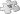

Nagoya
Nagoya 名古屋市 | |
|---|---|
| City of Nagoya[1] | |
      .htm) From top left:Down Town of Nagoya, Higashiyama Zoo and Botanical Gardens, Nagoya TV Tower, Nagoya Port, Triton Bridge, Nagoya Castle, Legoland Japan Resort | |
 Flag  | |
 | |
 Location of Nagoya in Aichi Prefecture | |
 Nagoya | |
| Coordinates: 35°11′N 136°54′E / 35.183°N 136.900°ECoordinates: 35°11′N 136°54′E / 35.183°N 136.900°E | |
| Country | |
| Region | Chūbu (Tōkai) |
| Prefecture | Aichi Prefecture |
| Government | |
| • Mayor | Takashi Kawamura (Genzei Nippon) |
| • Representatives | 5 |
| Area | |
| • Designated city | 326.45 km2 (126.04 sq mi) |
| Population (October 1, 2019) | |
| • Designated city | 2,327,557 (3rd) |
| • Metro | 10,240,000 (3rd) |
| Time zone | UTC+9 (Japan Standard Time) |
| - Tree | Camphor laurel (Cinnamomum camphora) |
| - Flower | Lilium |
| Phone number | 052-972-2017 |
| Address | 3-1-1 Sannomaru, Naka-ku, Nagoya-shi, Aichi-ken 460-0001 |
| Website | www |
| [3] | |
| Nagoya | |||||
|---|---|---|---|---|---|
"Nagoya" in kanji | |||||
| Japanese name | |||||
| Kanji | 名古屋 | ||||
| Hiragana | なごや | ||||
| Katakana | ナゴヤ | ||||
| |||||
Nagoya (名古屋市, Nagoya-shi) is the largest city in the Chūbu region of Japan. It is Japan's fourth-largest incorporated city and the third most populous urban area. Located on the Pacific coast on central Honshu, it is the capital of Aichi Prefecture and is one of Japan's major ports along with those of Tokyo, Osaka, Kobe, Yokohama, and Chiba. It is also the center of Japan's third-largest metropolitan region, known as the Chūkyō metropolitan area. As of 1 October 2019[update], 2,327,557 people lived in the city, part of Chūkyō metropolitan Area's 10.11 million people,[4] making it one of the 50 largest urban areas in the world.
In 1610, the warlord Tokugawa Ieyasu, a retainer of Oda Nobunaga, moved the capital of Owari Province from Kiyosu to Nagoya. This period saw the renovation of Nagoya Castle. Nagoya was proclaimed a city in 1889, during the Meiji Restoration; it became a major industrial hub for Japan. The traditional manufactures of timepieces, bicycles, and sewing machines were followed by the production of special steels, chemicals, oil, and petrochemicals, as the area’s automobile, aviation, and shipbuilding industries flourished.[5] Nagoya was impacted by bombing from US air raids during World War II.
After the war, Nagoya developed into a major port and transport center. The Shinkansen high-speed line connecting Tokyo and Osaka converges on Nagoya. Nagoya is served by two airports: Chubu Centrair International Airport in nearby Tokoname, and Nagoya Airfield, home to Mitsubishi Aircraft Corporation. Nagoya remains an important center for the automotive, aviation, and ceramic industries, hosting the headquarters of Brother Industries, Ibanez, Lexus, and Toyota Tsusho, among others.
Nagoya is home to Nagoya University, the Nagoya Institute of Technology, and Nagoya City University. It is also the location of numerous cultural institutions, including the Tokugawa Art Museum, Atsuta Shrine, Higashiyama Zoo and Botanical Gardens, Aichi Arts Center, and Misono-za. Nagoya TV Tower is the oldest TV tower in Japan.
Etymology[edit]
The city's name was historically written as 那古野 or 名護屋 (both read as Nagoya). One possible origin is the adjective nagoyaka (なごやか), meaning 'peaceful'. [1]
The name Chūkyō (中京), consisting of chū (middle) + kyō (capital) is also used to refer to Nagoya. Notable examples of the use of the name Chūkyō include the Chūkyō Industrial Area, Chūkyō Metropolitan Area, Chūkyō Television Broadcasting, Chukyo University and the Chukyo Racecourse.
History[edit]
Origin[edit]
This section needs additional citations for verification. (November 2009) (Learn how and when to remove this template message) |
Oda Nobunaga and his protégés Toyotomi Hideyoshi and Tokugawa Ieyasu were powerful warlords based in the Nagoya area who gradually succeeded in unifying Japan. In 1610, Tokugawa Ieyasu moved the capital of Owari Province from Kiyosu, about seven kilometers (4.3 miles) away, to a more strategic location in present-day Nagoya.
In May–June 1560, the Battle of Okehazama took place in Dengakuhazama, Owari Province which was just outside of what would become Nagoya city. In this battle, Oda Nobunaga defeated Imagawa Yoshimoto and established himself as one of the leading warlords in the Sengoku period.[6]
- Gallery

The Great Atsuta Shrine, which dates back to c. 100 AD and houses the holy sword Kusanagi, one of the imperial regalia of Japan

Ōsu Kannon is a Buddhist temple, originally built in 1333

Battle of Okehazama (May–June, 1560)
Tokugawa period[edit]
During this period Nagoya Castle was constructed, built partly from materials taken from Kiyosu Castle. During the construction, the entire town around Kiyosu Castle, consisting of around 60,000 people, moved from Kiyosu to the newly planned town around Nagoya Castle.[7] Around the same time, the nearby ancient Atsuta Shrine was designated as a waystation, called Miya (the Shrine), on the important Tōkaidō road, which linked the two capitals of Kyoto and Edo (now Tokyo). A town developed around the temple to support travelers. The castle and shrine towns formed the city.
.jpg/347px-Nagoya_Castle(Edit2).html)
Nagoya Castle was constructed as the seat of the Owari branch of the ruling Tokugawa clan
.JPG/260px-Shikemichi_Nagoya_(12).html)
Edo era buildings in Shikemichi (四間道)

Miya-juku (Atsuta Shrine) in the 1830s, as depicted by Hiroshige

Woodcut print of Hongan-ji Nagoya Betsuin (Nishi-Honganji)

Industrialization[edit]
During the Meiji Restoration Japan's provinces were restructured into prefectures and the government changed from family to bureaucratic rule. Nagoya was proclaimed a city on October 1, 1889, and designated a city on September 1, 1956, by government ordinance.
Nagoya became an industrial hub for the region. Its economic sphere included the famous pottery towns of Tokoname, Tajimi and Seto, as well as Okazaki, one of the only places where gunpowder was produced under the shogunate. Other industries included cotton and complex mechanical dolls called karakuri ningyō.
Mitsubishi Aircraft Company was established in 1920 in Nagoya and became one of the largest aircraft manufacturers in Japan. The availability of space and the central location of the region and the well-established connectivity were some of the major factors that lead to the establishment of the aviation industry there.

Nagoya Station in 1886

Hirokoji in Nagoya during the Meiji era

Main Gate of the Nagoya Expo in Tsuruma Park, 1928

Nagoya map circa 1930

Toyota Motor Corporation Koromo plant in 1938

Nagoya in the Showa period
World War II and later[edit]
Nagoya was the target of US air raids during World War II. The population of Nagoya at this time was estimated to be 1.5 million, fourth among Japanese cities and one of the three largest centers of the Japanese aircraft industry. It was estimated that 25% of its workers were engaged in aircraft production. Important Japanese aircraft targets (numbers 193, 194, 198, 2010, and 1729) were within the city itself, while others (notably 240 and 1833) were to the north of Kagamigahara. It was estimated that they produced between 40% and 50% of Japanese combat aircraft and engines, such as the vital Mitsubishi A6M Zero fighter. The Nagoya area also produced machine tools, bearings, railway equipment, metal alloys, tanks, motor vehicles and processed foods during World War II.
Air raids began on April 18, 1942, with an attack on a Mitsubishi Heavy Industries aircraft works, the Matsuhigecho oil warehouse, the Nagoya Castle military barracks and the Nagoya war industries plant.[8] The bombing continued through the spring of 1945, and included large-scale firebombing. Nagoya was the target of two of Bomber Command’s attacks. These incendiary attacks, one by day and one by night, devastated 15.3 square kilometres (5.9 sq mi) . The XXI Bomber Command established a new U.S. Army Air Force record with the greatest tonnage ever released on a single target in one mission—3,162 tons of incendiaries. It also destroyed or damaged twenty-eight of the numbered targets and raised the area burned to almost one-fourth of the entire city.[9][full citation needed] Nagoya Castle, which was being used as a military command post, was hit and mostly destroyed on May 14, 1945.[10] Reconstruction of the main building was completed in 1959. Later in the same year on July 26th, 1945 the Enola Gay also dropped a conventional pumpkin bomb in the Yagoto area of Nagoya as part of a bombing raid in order to train for their mission to Hiroshima.[11]
In 1959, the city was flooded and severely damaged by the Ise-wan Typhoon.

Nagoya Castle on fire 1945

Nagoya after the 1945 air raid

Damage from the Ise-wan Typhoon (Typhoon Vera), 1959
After the war the city was able to rebuilt and take up its role again as one of the country's leading industrial and manufacturing centres. It also plays an increasing role in the meetings, incentives, conferencing, exhibitions (MICE) industry, hosting the Expo 2005 and the Nagoya Protocol conference in 2010.
Geography and administrative divisions[edit]


Nagoya lies north of Ise Bay on the Nōbi Plain. The city was built on low-level plateaus to ward off floodwaters. The plain is one of the nation's most fertile areas. The Kiso River flows to the west along the city border, and the Shōnai River comes from the northeast and turns south towards the bay at Nishi Ward. The man-made Hori River was constructed as a canal in 1610. It flows from north to south, as part of the Shōnai River system. The rivers allowed for trade with the hinterland. The Tempaku River feeds from a number of smaller river in the east, flows briefly south at Nonami and then west at Ōdaka into the bay.
The city's location and its position in the centre of Japan allowed it to develop economically and politically.
Wards[edit]

Nagoya has 16 wards.
| Wards of Nagoya | |||||||
|---|---|---|---|---|---|---|---|
| Place Name | Map of Nagoya | ||||||
| Rōmaji | Kanji | Color | Population | Land area in km2 | Pop. density
per km2 |
||
| 1 | Atsuta-ku | 熱田区 | Blue | 66,318 | 8.20 | 8,088 |  |
| 2 | Chikusa-ku | 千種区 | Brown | 165,863 | 18.18 | 9,123 | |
| 3 | Higashi-ku | 東区 | Red | 82,939 | 7.71 | 10,757 | |
| 4 | Kita-ku | 北区 | Purple | 163,555 | 17.53 | 9,330 | |
| 5 | Meitō-ku | 名東区 | Dark blue | 165,287 | 19.45 | 8,498 | |
| 6 | Midori-ku | 緑区 | Light red | 247,475 | 37.91 | 6,528 | |
| 7 | Minami-ku | 南区 | Orange | 136,015 | 18.46 | 7,368 | |
| 8 | Minato-ku | 港区 | Intense Green | 143,913 | 45.64 | 3,153 | |
| 9 | Mizuho-ku | 瑞穂区 | Dark purple | 107,622 | 11.22 | 9,592 | |
| 10 | Moriyama-ku | 守山区 | Light green | 176,298 | 34.01 | 5,184 | |
| 11 | Naka-ku - administrative center | 中区 | Green | 90,918 | 9.38 | 9,693 | |
| 12 | Nakagawa-ku | 中川区 | Pink | 220,782 | 32.02 | 6,895 | |
| 13 | Nakamura-ku | 中村区 | Light blue | 135,134 | 16.30 | 8,290 | |
| 14 | Nishi-ku | 西区 | Dark orange | 150,480 | 17.93 | 8,393 | |
| 15 | Shōwa-ku | 昭和区 | Yellow | 110,436 | 10.94 | 10,095 | |
| 16 | Tenpaku-ku | 天白区 | Cyan | 164,522 | 21.58 | 7,624 | |
Cityscape[edit]
- Gallery

Nagoya City skyline seen from Heiwa Koen Aqua Tower
.JPG/293px-Nagoya_(2015-11-03).html)
Nagoya in 2015
.jpg/347px-Nagoya_2017_(34159008173).html)
Nagoya city night view
.jpg/347px-2016_Japan_Nagoya_81_(33038233234).html)
Climate[edit]
Nagoya has a humid subtropical climate (Köppen climate classification: Cfa) with hot summers and cool winters. The summer is noticeably wetter than the winter, although rain falls throughout the year.
| Climate data for Nagoya, Aichi (1981–2010) | |||||||||||||
|---|---|---|---|---|---|---|---|---|---|---|---|---|---|
| Month | Jan | Feb | Mar | Apr | May | Jun | Jul | Aug | Sep | Oct | Nov | Dec | Year |
| Record high °C (°F) | 21.0 (69.8) |
23.5 (74.3) |
25.8 (78.4) |
30.5 (86.9) |
34.8 (94.6) |
35.8 (96.4) |
39.6 (103.3) |
40.3 (104.5) |
38.0 (100.4) |
32.7 (90.9) |
27.2 (81.0) |
22.6 (72.7) |
40.3 (104.5) |
| Average high °C (°F) | 9.0 (48.2) |
10.1 (50.2) |
13.9 (57.0) |
19.9 (67.8) |
24.1 (75.4) |
27.2 (81.0) |
30.8 (87.4) |
32.8 (91.0) |
28.6 (83.5) |
22.8 (73.0) |
17.0 (62.6) |
11.6 (52.9) |
20.7 (69.3) |
| Daily mean °C (°F) | 4.5 (40.1) |
5.2 (41.4) |
8.7 (47.7) |
14.4 (57.9) |
18.9 (66.0) |
22.7 (72.9) |
26.4 (79.5) |
27.8 (82.0) |
24.1 (75.4) |
18.1 (64.6) |
12.2 (54.0) |
7.0 (44.6) |
15.8 (60.4) |
| Average low °C (°F) | 0.8 (33.4) |
1.1 (34.0) |
4.2 (39.6) |
9.6 (49.3) |
14.5 (58.1) |
19.0 (66.2) |
23.0 (73.4) |
24.3 (75.7) |
20.7 (69.3) |
14.1 (57.4) |
8.1 (46.6) |
3.1 (37.6) |
11.9 (53.4) |
| Record low °C (°F) | −10.3 (13.5) |
−9.5 (14.9) |
−6.8 (19.8) |
−2.1 (28.2) |
2.8 (37.0) |
8.2 (46.8) |
14.0 (57.2) |
14.4 (57.9) |
9.5 (49.1) |
1.5 (34.7) |
−2.7 (27.1) |
−7.2 (19.0) |
−10.3 (13.5) |
| Average rainfall mm (inches) | 48.4 (1.91) |
65.6 (2.58) |
121.8 (4.80) |
124.8 (4.91) |
156.5 (6.16) |
201.0 (7.91) |
203.6 (8.02) |
126.3 (4.97) |
234.4 (9.23) |
128.3 (5.05) |
79.7 (3.14) |
45.0 (1.77) |
1,535.3 (60.44) |
| Average snowfall cm (inches) | 5 (2.0) |
8 (3.1) |
0 (0) |
0 (0) |
0 (0) |
0 (0) |
0 (0) |
0 (0) |
0 (0) |
0 (0) |
0 (0) |
3 (1.2) |
16 (6.3) |
| Average rainy days (≥ 0.5 mm) | 6.8 | 7.5 | 10.2 | 10.4 | 11.4 | 12.8 | 13.0 | 8.7 | 11.9 | 9.5 | 7.2 | 6.9 | 116.2 |
| Average snowy days | 6.4 | 5.4 | 2.0 | 0.0 | 0.0 | 0.0 | 0.0 | 0.0 | 0.0 | 0.0 | 0.0 | 2.6 | 16.6 |
| Average relative humidity (%) | 64 | 61 | 59 | 60 | 65 | 71 | 74 | 70 | 71 | 68 | 66 | 65 | 66 |
| Mean monthly sunshine hours | 170.1 | 170.0 | 189.1 | 196.6 | 197.5 | 149.9 | 164.3 | 200.4 | 151.0 | 169.0 | 162.7 | 172.2 | 2,091.6 |
| Average ultraviolet index | 2 | 4 | 6 | 7 | 9 | 10 | 10 | 10 | 8 | 6 | 3 | 2 | 6 |
| Source: Japan Meteorological Agency[12] (records)[13] and Weather Atlas[14] | |||||||||||||
Demographics[edit]

One of the earliest censuses, carried out in 1889, counted 157,496 residents. The population reached the 1 million mark in 1934 and as of December 2010 had an estimated population of 2,259,993 with a population density of 6,923 persons per km2. Also as of December 2010 an estimated 1,019,859 households resided there—a significant increase from 153,370 at the end of World War II in 1945.[15]
The area is 326.45 square kilometres (126.04 sq mi). Its metropolitan area extends into the Mie and Gifu prefectures, with a total population of about 10 million people, surpassed only by Osaka and Tokyo.
Economy[edit]


Nagoya is the center of Greater Nagoya, which earned nearly 70 percent of Japan's 2003 trade surplus.[16]
Automotive industry[edit]
Nagoya's main industry is automotive. Toyota's luxury brand Lexus, Denso, Aisin Seiki Co., Toyota Industries, JTEKT and Toyota Boshoku have their headquarters in or near Nagoya. Mitsubishi Motors has an R&D division in the suburb of Okazaki. Major component suppliers such as Magna International and PPG also have a strong presence here. Spark plug maker NGK and Nippon Sharyo, known for manufacturing rolling stock including the Shinkansen are headquartered there.
Aviation industry[edit]
The aviation history has historically been of importance since the industrialization. During the war the Mitsubishi A6M Zero fighter was constructed in Nagoya. The aviation tradition continues with Mitsubishi Aircraft Corporation headquartered in the Nagoya Airfield's terminal building in Komaki. The Mitsubishi Regional Jet (MRJ) aircraft is produced at a factory adjacent to the airport.[17] The MRJ is a partnership between majority owner Mitsubishi Heavy Industries and Toyota[18] with design assistance from Toyota affiliate Fuji Heavy Industries, already a manufacturer of aircraft. It is the first airliner designed and produced in Japan since the NAMC YS-11 of the 1960s.[19][20] The MRJ's first flight was on November 11, 2015.[21][22]
Ceramics[edit]
Japanese pottery and porcelain has a long tradition due to suitable clay being available in Owari Province. Before and during the Edo period there were two main kilns in the region: Seto and Tokoname. In Nagoya Castle a type of oniwa-yaki (literally "garden ware") called Ofukei ware was produced by the feudal lord's court. Almost every feudal lord had his own oniwa-yaki, also to have gifts made. In the town itself Toyoraku ware and Sasashima ware Japanese tea utensils were made with refined tastes. Ofukei ware started under the first Owari lord Tokugawa Yoshinao and was interrupted once, but continued on until the end of the Edo period. It became widely known in Japan. The lord's taste in ceramics was also imitated by other Owari samurai, such as Hirasawa Kurō and Masaki Sōzaburō, who made their own pieces.
Toyoraku ware continued on until the Taishō era under the 8th generation. Colourful pieces and gorgeous tea utensils were highly valued. Sasashima ware also experienced its heyday during this time. Colourful and soft ceramic items such as sake and tea utensils and objects were produced and intently collected.
An early type of manufactured production was the blue-and-white Kawana ware. With the advent of industrialisation during the Meiji era of the late 19th century, some export wares were produced. Industrial-scale export porcelain was made by old Noritake, also Nagoya E-tsuke (名古屋絵付) became popular.[23]
Production of industrial ceramics continues to be an important economic factor with companies such as INAX, NGK, and NGK Insulators.
Technology[edit]
Mechanized puppets, called "karakuri ningyō", are a traditional craft from the area. Robot technology is another rapidly developing industry.
A materials engineering industry is developing.[24]
Brother Industries, which is known for office electronics such as multifunction printers is based in Nagoya, as is Hoshizaki Electric, which is known for commercial ice machines and refrigeration equipment. Many small machine tool and electronics companies are also based in the area.[25]
The World Expo 2005, also known as Aichi Expo was held near Nagoya in the neighboring cities of Nagakute and Seto from March 25 to September 25, 2005.
Retail[edit]
Retail is of importance in the city. Traditional department stores with roots in Nagoya are Matsuzakaya, Maruei and the Meitetsu Department Store. Oriental Nakamura was bought by Mitsukoshi from Tokyo in 1977.
Arts and crafts[edit]
The Owari province was historically well known for the cloisonné art form. The Ando Cloisonné Company continues the long tradition.
Other[edit]
The Confectionery company Marukawa is well known.
The city offers venues for conferences and congresses such as the Nagoya Congress Center and the Nagoya International Exhibition Hall.
Transportation[edit]


Nagoya is served by Chubu Centrair International Airport (NGO), built on an artificial island in Tokoname. The airport has international flights and a high volume of domestic flights.
A second airport is Nagoya Airfield (Komaki Airport, NKM) near the city's boundary with Komaki and Kasugai. On February 17, 2005, Nagoya Airport's commercial international flights moved to Centrair Airport. Nagoya Airfield is now used for general aviation and as an airbase and is the main Fuji Dream Airlines hub.
Nagoya Station, the world's largest train station by floor area, is on the Tōkaidō Shinkansen line, the Tōkaidō Main Line, and the Chūō Main Line, among others. JR Central, which operates the Tōkaidō Shinkansen, has its headquarters there. Meitetsu is also based in Nagoya, and along with Kintetsu provides regional rail service to the Tōkai and Kansai regions. Nagoya Subway provides urban transit service.
Nagoya Port is the largest port by international trade value in Japan. Toyota Motor Corporation exports via this port.
Nagoya is known for its orderly grid street plan for which the shōgun Tokugawa Ieyasu is ultimately responsible.[26]

Oasis 21 bus terminal

Entrance to Shiyakusho Subway Station


Education[edit]


Nagoya has mostly state-run primary and secondary schools. The area in the city limits includes international schools such as the Nagoya International School and Colégio Brasil Japão Prof. Shinoda Brazilian school.[27]
State and private colleges and universities primarily located in the eastern area. Some Western-style institutions were founded early in the Meiji era, with more opening during the Taishō and Shōwa eras. Nagoya University was set up in 1871 as a medical school and has produced six Nobel Prize laureates in science.[28] Nanzan University was established by the Roman Catholic Society of the Divine Word in 1932 as a high school and expanded to include Nanzan Junior College and the Nanzan Institute for Religion and Culture. The main campus was designed in the 1960s by the renowned architect Antonin Raymond. Some universities specialise in engineering and technology, such as Nagoya University Engineering school, Nagoya Institute of Technology and Toyota Technological Institute; these universities receive support and grants from companies such as Toyota.
Other colleges and universities include: Aichi Prefectural College of Nursing & Health, Aichi Shukutoku Junior College, Aichi Toho University, Chukyo University, Daido University, Doho University, Kinjo Gakuin University, Kinjo Gakuin University Junior College, Meijo University, Nagoya City University, Nagoya College of Music, Nagoya Future Culture College, Nagoya Gakuin University, Nagoya Management Junior College, Nagoya Women's University, St. Mary's College, Nagoya, Sugiyama Jogakuen University, Sugiyama Jogakuen University Junior College, Tokai Gakuen Women's College. Various universities from outside Nagoya have set up satellite campuses, such as Tokyo University of Social Welfare.
The Hōsa Library dates to the 17th century and houses 110,000 items, including books of classic literature such as historic editions of The Tale of Genji that are an heirloom of the Owari Tokugawa and were bequeathed to the city. The Nagoya City Archives store a large collection of documents and books. Tsuruma Central Library is a public library and Nagoya International Center has a collection of foreign-language books.
- National Universities
- Nagoya University (名古屋大学, Nagoya Daigaku)
- Nagoya Institute of Technology (名古屋工業大学, Nagoya Kōgyō Daigaku)
- Prefectural University
- Aichi Prefectural College of Nursing & Health (愛知県立看護大学, Aichi kenritsu kango Daigaku)
- Nagoya City University (名古屋市立大学, Nagoya shiritsu Daigaku)
- Private Universities
- Aichi University (愛知大学, Aichi Daigaku)
- Aichi Gakuin University (愛知学院大学, Aichi gakuin Daigaku)
- Aichi Shukutoku University (愛知淑徳大学, Aichi Shukutoku Daigaku)
- Aichi Toho University (愛知東邦大学, Aichi Toho Daigaku)
- Chukyo University (中京大学, Chūkyō Daigaku)
- Daido University (大同大学, Daidō Daigaku)
- Doho University (同朋大学, Dōhō Daigaku)
- Kinjo Gakuin University (金城学院大学, Kinjō Gakuin Daigaku)
- Meijo University (名城大学, Meijō Daigaku)
- Nagoya College of Music (名古屋音楽大学, Nagoya Ongaku Daigaku)
- Nagoya Gakuin University (名古屋学院大学, Nagoya Gakuin Daigaku)
- Nagoya Women's University (名古屋女子大学, Nagoya Joshi Daigaku)
- Nanzan University (南山大学, Nanzan Daigaku)
- Sugiyama Jogakuen University (椙山女学園大学, Sugiyama Jogakuen Daigaku)
- Tokyo University of Social Welfare (東京福祉大学, Tokyo Fukushi Daigaku)
- Tokai Gakuen University (東海学園大学, Tokai Gakuen Daigaku)
- Toyota Technological Institute (豊田工業大学, Toyota Kōgyō Daigaku)
This section needs additional citations for verification. (September 2013) (Learn how and when to remove this template message) |
Nagoya was a major trading city and political seat of the Owari lords, the most important house of the Tokugawa clan. They encouraged trade and the arts under their patronage, especially Tokugawa Muneharu, the 7th lord, who took a keen interest in drama and plays and lived lavishly. Under his rule, actors and actresses began to visit Nagoya. Arts and culture was further supported by the city's wealthy merchants. Culture flourished after the feudal Edo period and the beginning of the Meiji era. During World War II many old buildings and artefacts were destroyed. The region's economic and financial power in the post-war years rekindled the artistic and cultural scene.
Museums[edit]
Nagoya has multiple museums, including traditional and modern art, handicrafts to industrial high-tech, natural and scientific museums.
Nagoya Castle's collection is from the Owari Tokugawa era. The main tower is a museum that details the history of the castle and the city. The Honmaru Palace, destroyed in World War II, is slated for reconstruction by 2016 and will again be a prime example of the Shoin-zukuri architecture of the feudal era. Tokugawa Art Museum is a private museum belonging to the Owari Tokugawa, who lived in Nagoya castle for 16 generations. Among other things, it contains 10 designated national Treasures of Japan, including some of the oldest scrolls of The Tale of Genji.[29] The Nagoya Noh Theatre houses various precious objects of Noh theatre. The Nagoya City Museum showcases the history of the town.
Yōki-sō is a villa and gardens located in Chikusa-ku, close to Nittai-ji. It was constructed in the Taishō era for Ito Jirozaemon Suketami XV, the first president of Matsuzakaya.
Paintings and sculpture are exhibited at the Nagoya City Art Museum. Modern art is displayed at the Aichi Arts Center. The Aichi Arts Center also is the venue of rotating exhibitions. The city is also home to the Nagoya/Boston Museum of Fine Arts, a sister museum to the Museum of Fine Arts, Boston, which was founded to bring aspects of the MFA's collection to Japan.
The art of porcelain and ceramics can be seen at the Noritake Garden. Toyota has two museums in the city, the Toyota Automobile Museum which shows vintage cars, and the Toyota Commemorative Museum of Industry and Technology, which showcases company history, including its start as a textile mill.
The Nagoya City Tram & Subway Museum has trams and subway cars, as well as the Nagoya City Science Museum. The SCMaglev and Railway Park opened in March 2011 with various trains from the Central Japan Railway Company.
Other art museums in Aichi prefecture are the Aichi Prefectural Ceramic Museum and the Toyota Municipal Museum of Art. Meiji Mura is an open-air museum with salvaged buildings from the Meiji, Taishō and Showa eras. Another museum in Nagoya is the Mandolin Melodies Museum.
Other museums in the city include the International Design Centre Nagoya, the Japan Spinning Top Museum and the Bank of Tokyo-Mitsubishi UFJ Money Museum.
The civic authorities promote tourism and have taken steps to safeguard architectural heritage by earmarking them as cultural assets. Apart from the castle, temples, shrines and museums in the city, a "Cultural Path" was instituted in the 1980s, located between the Tokugawa Art Museum and Nagoya Castle. This residential area has historic buildings such as the Nagoya City Archives, the Nagoya City Hall main building, the Aichi Prefectural Office main building, the Futaba Museum, the former residence of Sasuke Toyoda, the former residence of Tetsujiro Haruta and the Chikaramachi Catholic Church. Most buildings date from the Meiji and Taishō era and are protected.
Culture[edit]

The Tokugawa Art Museum, which houses some of the finest art treasures of Japan

Textile Machinery Pavilion in the Toyota Commemorative Museum of Industry and Technology

SCMaglev and Railway Park

Aichi Arts Center in Sakae

Tsutsui-chō/Dekimachi tennōsai

Nagoya matsuri

Daidō-chōnin Matsuri in Ōsu

The Nagoya obi, the most popular type for kimono throughout Japan

Theatres[edit]
Noh theatre and Kyōgen date back to the feudal times of the Owari Tokugawa. The Nagoya Noh Theater at Nagoya Castle continues that tradition and is a prominent feature in the cultural life of the city, with monthly performances.
Developed during the Edo period, one of Japan's kabuki grand stages is Misono-za, which also hosts various other Japanese entertainment such as concerts.
In 1912, the musician Gorō Morita invented the Nagoya harp music instrument.
In 1992, the large, modern Aichi Arts Center was opened in Sakae. It is the main venue for performing arts, featuring a main hall that can be used for opera and theatre and a concert hall. The Nagoya Philharmonic Orchestra performs there, as well as many visiting guest orchestras.
Festivals[edit]
Apart from the main national festivals and holidays, other festivals in Nagoya are unique to the city/region.
Major events include the June Atsuta Festival, the July Port Festival, the August Nagoya Castle Summer Festival Castle and the October Nagoya Festival. Wards and areas host local festivals such as the Daidō-chōnin Matsuri (大須大道町人祭, Street Performer's Festival) in Ōsu.
Dialect[edit]
The Nagoya dialect (名古屋弁, Nagoya-ben) is spoken in the western half of Aichi Prefecture, centering on Nagoya. It is also called Owari dialect (尾張弁, Owari-ben). The Nagoya dialect is relatively close to standard Japanese and to the Kansai dialect, differing in pronunciation and vocabulary.
Handicrafts[edit]
The industry of Japanese handicrafts in the city is centuries old.
- Arimatsu and Narumi dye: during the construction of Nagoya Castle in the 17th century, the lords of Owari called in skilled craftsmen from Bungo Province in Kyushu, known for their tie-dyed fabrics. These craftsmen and their families were treated generously by the Owari and settled in the Arimatsu und Narumi neighbourhoods. Only the base fabric is dyed, leaving parts that were knotted as white spots. This highly specialised process requires 6–12 months to complete.
- Geta clog straps: wooden clogs called geta were the shoes of the feudal era. The Owari devised a unique pattern for the cotton straps of the clogs and ordered them to be made by local weavers. The technique has developed over the generations. The straps became stronger and more resilient but more comfortable for the feet with the discovery of cotton velvet.
- Shippo: the technique for enamelware called shippo arrived from the Netherlands towards the end of the Edo period. The patterns appear almost transparent and are often used on pottery.
- Candles: wax is taken from a wax tree and painted around a rope made of grass and Japanese paper (washi) over and over again into layers. When cut in half, the candle looks as if it grew like a tree with rings. Japanese candles produce less smoke and are harder to blow out, since the wick tends to be larger. Artists paint the candles in coloured patterns.
- Yuzen: the art of silk dyeing was introduced by craftsmen from Kyoto during the rule of Owari Togukawa. The initial designs were extravagant and brightly coloured, but over time became more muted and light-coloured.
- Sekku Ningyo: festival dolls were introduced by markets during the Meiji era. Nagoya craftsmen rank among the top producers.
- The city also gave its name to a type of obi, the sash that is used to tie a kimono. The term Nagoya obi can refer to an older type of obi used centuries ago. This type was cord-like.[30] The current Nagoya obi (名古屋帯?) – or to differentiate from the fukuro Nagoya obi, also called kyūsun Nagoya obi (九寸名古屋帯?, "nine-inch nagoya obi") – is the most-used obi type today. It was developed by a seamstress living in Nagoya at the end of the 1920s. The new, easy-to-use obi gained popularity among Tokyo's geisha, from whom it then was adopted by fashionable city women for their everyday wear. The Nagoya obi was originally for everyday wear, not for ceremonial outfits, but one made from exquisite brocade can be accepted as semi-ceremonial wear. A more formal version is called the Fukuro Nagoya obi (袋名古屋帯?) or hassun Nagoya obi (八寸名古屋帯?, "eight-inch Nagoya obi"), which is more formal.[31]
Cuisine[edit]
The city and the region are known for its unique local Nagoya cuisine (名古屋めし, Nagoya meshi). Dishes include:
- Tebasaki: chicken wings marinated in a sweet sauce with sesame seeds, basically a type of yakitori
- Tenmusu: a rice ball wrapped with nori that is filled with deep-fried tempura shrimp[32]
- Kishimen: flat udon noodles with a slippery texture, dipped in a light soy sauce soup and a sliced leek or other flavouring added. It can be eaten cold or hot.
- Red miso: various dishes that use red miso, such as miso katsu (pork cutlet with sweet miso sauce and miso nikomi udon (hard udon stewed in miso soup)
- Hitsumabushi: rice dish with unagi in a lidded wooden container. This dish is enjoyed three ways; as unadon, with spice and as chazuke.

Tebasaki

Kishimen, a local specialty

Red misokatsu
In popular culture[edit]
The world premier of the first Godzilla movie was in Nagoya on October 27, 1954.[33] The city, especially Nagoya Castle, has been featured in three other Godzilla movies: King Kong vs. Godzilla, Mothra vs. Godzilla, and Godzilla vs. Mothra. The city is also featured in Gamera vs. Gyaos and is the main setting of 2003 film Gozu. The 1995 film The Hunted starring Christopher Lambert and the 1992 film Mr. Baseball starring Tom Selleck were also filmed in the city.
The city was the setting for the 2007 movie Ashita e no yuigon (translated as Best Wishes for Tomorrow), in which a Japanese war criminal sets out to take responsibility for the execution of U.S. airmen.[34] The anime The Wind Rises by Hayao Miyazaki, released in 2013, is a highly fictionalized biography of the Mitsubishi A6M Zero's chief engineer Jiro Horikoshi and takes mostly place in Nagoya of the 1920s and 1930s.[35][36] Nagoya is also the setting for the manga and anime series Yatogame-chan Kansatsu Nikki, which highlights many of the sites and traditions of the city.
Sports[edit]
|  | This section needs expansion. You can help by adding to it. (September 2016) |
Nagoya is home to several professional sports teams:
| Club | Sport | League | Venue | Established |
|---|---|---|---|---|
| Chunichi Dragons | Baseball | Central League | Nagoya Dome, Nagoya Stadium | 1936 |
| Nagoya Diamond Dolphins | Basketball | B.League | Aichi Prefectural Gymnasium, Nagoya Higashi sport center | 1950 |
| Toyotsu Fighting Eagles Nagoya | Basketball | B.League | Biwajima sport center | 1957 |
| Daido Steel Phenix | Handball | Japan Handball League | Daido Steel Hoshizaki Gym | 1964 |
| Daido Steel Red Star | Volleyball | V.LEAGUE | Daido Steel Hoshizaki Gym | 1968 |
| Nagoya Cyclones | American football | X-League | Nagoya Minato Stadium | 1980 |
| Nagoya Frater | Hockey | Hockey Japan League | Shōnai Greens | 1985 |
| Nagoya Grampus | Soccer | J. League | Mizuho Athletic Stadium, Toyota Stadium | 1993 |
| Nagoya Oceans | Futsal | F. League | Teva Ocean Arena | 2006 |
In 2007, the Chunichi Dragons won the Japan Series baseball championship. In 2010, Nagoya Grampus won the J. League championship, their first in team history. Nagoya is also the home of the Nagoya Barbarians semi-pro rugby football club.
A honbasho sumo tournament is held every July at the Aichi Prefectural Gymnasium. The city has hosted The Crowns golf tournament since 1960 and the women's Nagoya Marathon since 1984.
In September 2016 the city was awarded the right to host the 2026 Asian Games after it was the only city to lodge a bid. It will be the third time Japan hosts the event after Tokyo in 1958 and Hiroshima in 1994.[37]
The city hosted the official 1979 Asian Basketball Championship. Later, it became one of the host cities of the official Women's Volleyball World Championship for its 1998, 2006 and 2010 editions.

The Chunichi Dragons are one of Japan's strongest baseball teams

The Aichi Prefectural Gymnasium is used for Sumo wrestling and other events

Nagoya Higashi sport center

Biwajima sport center

Teva Ocean Arena

.jpg/120px-%e3%83%8a%e3%82%b4%e3%83%a4%e3%83%89%e3%83%bc%e3%83%a0_-_panoramio_(2).html)


International relations[edit]

The Nagoya International Center promotes international exchange in the local community. It houses the U.S. Consulate on the 6th floor and the United Nations Centre for Regional Development (UNCRD) on the 7th floor.
Twin towns – Sister cities[edit]
Nagoya is twinned with five cities around the world:[38]
 Los Angeles, United States (affiliated April 1, 1959)
Los Angeles, United States (affiliated April 1, 1959) Mexico City, Mexico (affiliated February 16, 1978)
Mexico City, Mexico (affiliated February 16, 1978).svg/23px-Flag_of_Australia_(converted).svg.html) Sydney, Australia (affiliated September 16, 1980)
Sydney, Australia (affiliated September 16, 1980) Turin, Italy (affiliated May 27, 2005)[39]
Turin, Italy (affiliated May 27, 2005)[39] Reims, France (affiliated October 20, 2017)
Reims, France (affiliated October 20, 2017)
 The sister city relationship with Nanjing in China was suspended in February 21, 2012,[40] following public comments by Nagoya mayor Takashi Kawamura denying the Nanking Massacre.[41]
The sister city relationship with Nanjing in China was suspended in February 21, 2012,[40] following public comments by Nagoya mayor Takashi Kawamura denying the Nanking Massacre.[41]
Partner cities[edit]
 Taichung, Taiwan (affiliated October 25, 2019)[42]
Taichung, Taiwan (affiliated October 25, 2019)[42] Tashkent, Uzbekistan (affiliated December 18, 2019)[43]
Tashkent, Uzbekistan (affiliated December 18, 2019)[43]
Sister ports[edit]
Nagoya's sister ports are:
- Los Angeles, United States (1959)
- Fremantle, Australia (1983)
- Baltimore, United States (1985)
.svg/23px-Flag_of_Belgium_(civil).svg.html) Antwerp, Belgium (1988)
Antwerp, Belgium (1988) Shanghai, China (2003)
Shanghai, China (2003)- Sydney, Australia (2010)
- Bruges, Belgium (2013)
Sister Airport[edit]
Nagoya's sister Airport is:
- Grant County International Airport, United States (2016)
Notable people[edit]
This section does not cite any sources. (January 2015) (Learn how and when to remove this template message) |
Historical figures[edit]
The three samurais who unified Japan in the 16th century all have strong links to Nagoya.
- Oda Nobunaga (1534–1582), from Nagoya Castle in Owari Province
- Toyotomi Hideyoshi (1536–1598), one of Oda Nobunaga's top generals
- Tokugawa Ieyasu (1543–1616), born in Mikawa Province, (the eastern half of modern Aichi prefecture)

Oda Nobunaga was born according to legend in Nagoya Castle

Toyotomi Hideyoshi, known as Japan's second "great unifier"

Tokugawa Ieyasu
Other samurai
- Minamoto no Yoritomo (the first shōgun of the Kamakura shogunate)
- Shibata Katsuie (samurai of the Sengoku period)
- Niwa Nagahide (samurai of the Sengoku period)
- Maeda Toshiie (samurai of the Sengoku period)
- Katō Kiyomasa (samurai of the Sengoku period)
- Sassa Narimasa (samurai of the Sengoku period)
- Sakuma Nobumori (samurai of the Sengoku period)
- Sakuma Morimasa (samurai of the Sengoku period)
- Maeda Toshimasu (Maeda Keijirō, samurai of the Sengoku period)
Inventors and industrialists[edit]
- Sakichi Toyoda (1867–1930), prolific inventor from Shizuoka Prefecture
- Kiichiro Toyoda (1894–1952), son of Sakichi Toyoda, established Toyota Motor Corporation
- Akio Morita (1921–1999), co-founder of Sony
- Jiro Horikoshi (1903–1982), worked in Nagoya as chief engineer of the Mitsubishi A6M Zero fighter
Executive officers[edit]
Writers[edit]
- Yokoi Yayū (1702–1783), haiku poet and samurai in Owari Domain
- Ryukichi Terao (born 1971), Hispanist and translator of Latin American literature
Musicians and composers[edit]
- Etsuko Hirose (born 1979), classical pianist
- Moa Kikuchi
- Home Made Kazoku
- Yōsei Teikoku
- Spyair
- Kiyoharu
- Koji Kondo
- Seamo
- Takanori Iwata
- Naomi Tamura
- Kazuki Kato
- Lullatone
- Jasmine You
- Outrage
- Kanon Suzuki
- Shinichi Suzuki
- nobodyknows+
- SKE48
- Okada Yukiko
- Coldrain
- May'n
- Team Syachihoko
- Sarah Midori Perry
- Kokoro
Actors[edit]
- Matt McCooey, British actor of Japanese ancestry
- Naoko Mori
- Kaito Nakamura
- The Nose sisters: Anna, Erena, and Karina
- Hirotaka Suzuoki
- Hiroshi Tamaki
Athletes[edit]
- Miki Ando
- Mao Asada
- Mai Asada
- Midori Ito
- Jong Tae-se
- Takahiko Kozuka
- Takashi Sugiura
- Último Dragón
- Shoma Uno
- Yoshiaki Oiwa


Manga artists[edit]
Sightseeing[edit]

Nagoya's two most famous sightseeing spots are Atsuta Shrine and Nagoya Castle.[44]
- Atsuta Shrine is the second-most venerable shrine in Japan, after Ise Grand Shrine. It is said to hold the Kusanagi sword, one of the three imperial regalia of Japan, but it is not on public display. It holds around 70 festivals per year. The shrine hosts over 4,400 national treasures that span its 2,000 year history.
- Nagoya Castle was built in 1612. Although a large part of it burned down during World War II, the castle was restored in 1959, adding amenities such as elevators. The castle is famous for two magnificent Golden tiger-headed carp (金の鯱, Kin no Shachihoko) on the roof, often used as the symbol of Nagoya.
Other attractions include:
- Nagoya TV Tower and Hisaya-Ōdori Park, located in the central Sakae district
- JR Central Towers of Nagoya Station
- Midland Square: The new international sales headquarters for Toyota features Japan's highest open-air observation deck.[45]
- The Nagoya Port area, which includes a themed shopping mall called Italia Mura as well as the popular Port of Nagoya Public Aquarium.
- Higashiyama Zoo and Botanical Gardens and the Higashiyama Sky Tower
- The Toyota museums: The Toyota Commemorative Museum of Industry and Technology near Nagoya station
- Danpusan Kofun : The maximum old burial mound(Kofun) in Aichi.
- The Noritake factory: The home of Noritake fine chinaware is open to visitors and allows people to learn about the history of the establishment. It includes a cafe, information/technology displays, and shopping facilities, so visitors can spend a whole day wandering through the displays and grounds. It also holds a few unrestored areas that serve as reminders of devastation caused by the final stages of World War II.
- The SCMaglev and Railway Park
- The Nagoya/Boston Museum of Fine Arts (N/BMFA)
- The Ōsu shopping district and nearby temples, Ōsu Kannon and Banshō-ji
- The Tokugawa Art Museum and the Tokugawa Garden, a surrounding Japanese garden
- The Nagoya City Science and Art Museums, located in Shirakawa Park, not far from Fushimi Subway Station
- The Bank of Tokyo-Mitsubishi UFJ Money Museum, now located near the Akatsuka-shirakabe 赤塚白壁 bus stop on Dekimachi-dōri.[46]
- Legoland Japan, Japan's first Legoland resort.[47]
Gallery[edit]

Meieki Town

Kanayama Town

Ozone Town

Imaike Town

Hoshigaoka Town

Yabacho Town

Honmaru Palace (Nagoya Castle)
The Nagoya TV Tower and Oasis 21
.jpg/240px-%e5%90%8d%e5%8f%a4%e5%b1%8b%e3%83%86%e3%83%ac%e3%83%93%e5%a1%94_-_panoramio_(16).html)
Hisaya Ōdori Park
（Nagoya Central Park）.jpg/240px-Main_shopping_street_(Osu_in_Nagoya%2c_Japan).html)
Ōsu shopping district
Port of Nagoya
Garden Wharf
Togokusan Fruits Park

Shirotori Park

Nagoya Port Wildflower Garden BlueBonnet

Nakamura Park

Cultural Path Futaba Museum (The residences of Sada Yacco)

Cultural Path Sasuke Toyoda House

Maker's Pier

@NAGOYA(Sannomaru)


_31_Mar%2c_2016_-_panoramio.jpg/240px-%e6%a1%9c%e3%81%a8%e5%90%8d%e5%8f%a4%e5%b1%8b%e5%9f%8e(Nagoya_Castle_with_Cherry_blossoms)_31_Mar%2c_2016_-_panoramio.html)


_23_Aug%2c_2015_-_panoramio.html)
.htm)


Surrounding area[edit]
Nagoya is a starting point for visits to the surrounding area, such as Inuyama, Little World Museum of Man, Meiji Mura, Tokoname, Himakajima, Tahara, Toyohashi and Toyokawa and Hamamatsu. Reachable with at most a two-hour journey are Gifu, Gujo Hachiman, Gifu, Ise Shrine, Takayama, Gifu, Gero Onsen and the hill stations in the Kiso Valley Magome and Tsumago.
References[edit]
- ^ Nagoya's official English Name Archived 2010-02-02 at the Wayback Machine
- ^ http://demographia.com/db-worldua.pdf }
- ^ "Archived copy" 平成23年6月1日現在の世帯数と人口(全市・区別) (in Japanese). Archived from the original on 22 September 2011. Retrieved 19 June 2011.CS1 maint: archived copy as title (link)
- ^ "Population of Japan". Japanese Statistics Bureau. 2010.
- ^ "Nagoya | Japan". Encyclopedia Britannica. Retrieved 2020-04-28.
- ^ A Military History of Japan by John Kuehn p. 102
- ^ "Kiyosu Castle". Archived from the original on 2008-02-09. Retrieved 2007-05-01.
- ^ The First Heroes by Craig Nelson
- ^ 21st Bomber Command, Tactical Mission Report NO. 44, ocr.pdf, March 20, 1945.
- ^ Preston John Hubbard (1990). Apocalypse Undone. Vanderbilt University Press. p. 199. ISBN 9780826514011.
- ^ Campbell, Richard H. (2005). The Silverplate Bombers: A History and Registry of the Enola Gay and Other B-29's Configured to Carry Atomic Bombs. Jefferson, North Carolina: McFarland & Company, Inc. ISBN 0-7864-2139-8.CS1 maint: ref=harv (link)
- ^ 気象庁 / 平年値（年・月ごとの値）. Japan Meteorological Agency.
- ^ 観測史上1～10位の値（ 年間を通じての値）. Japan Meteorological Agency.
- ^ d.o.o, Yu Media Group. "Nagoya, Japan - Detailed climate information and monthly weather forecast". Weather Atlas. Retrieved 2019-07-09.
- ^ 平成22年12月1日現在の世帯数と人口(全市・区別) [Population and Number of Households as of 1 December, Heisei 22] (in Japanese). Nagoya City. 20 December 2010. Archived from the original on 15 January 2011. Retrieved 7 January 2011.
- ^ "Report of Chubu Bureau of Economy, Trade and Industry METI (in Japanese)" (PDF). Archived from the original (PDF) on 2016-03-13.
- ^ Kohase, Yusuke (5 January 2015). 三菱航空機、名古屋空港に本社移転 小牧南工場に隣接. Aviation Wire. Retrieved 16 January 2015.
- ^ Toyota to sink $67.2 mln in Mitsubishi passenger jet, China Economic Net, May 23, 2008 Archived July 10, 2009, at the Wayback Machine
- ^ Anselmo, Joe. "Milestone for the MRJ" Aviation Week & Space Technology, 24 October 2014. Accessed: 25 October 2014.
- ^ Mecham, Michael & Anselmo, Joe. "Big ambitions" Aviation Week & Space Technology, 17 March 2008. Accessed: 25 October 2014.
- ^ "Dawn of a new era for Japan's aviation industry with MRJ debut flight". The Japan Times Online. 11 November 2015. Retrieved 12 April 2017.
- ^ Pfanner, Eric (11 November 2015). "Mitsubishi Aims for the Sky After Jet Takes Off". Retrieved 12 April 2017 – via www.wsj.com.
- ^ "Archived copy". Archived from the original on 2018-01-12. Retrieved 2017-12-18.CS1 maint: archived copy as title (link)
- ^ "GREATER NAGOYA INITIATIVE, Industry, Growth Sectors". Archived from the original on 2009-03-02.
- ^ "Greater Nagoya Initiative, Industry, Innovation". Archived from the original on 2009-01-30.
- ^ 'The linear roads of Nagoya' at 名古屋.tokyo
- ^ "Archived copy". Archived from the original on 2015-10-18. Retrieved 2008-02-07.CS1 maint: archived copy as title (link) Escolas Brasileiras Homologadas no Japão
- ^ "Nagoya University World Class Researchers". nagoya-u.ac.jp. Retrieved 12 April 2017.
- ^ "Yamasa.org's Tokugawa Art Museum page".
- ^ Yoshino Antiques. "Kimono". Archived from the original on 2009-03-26. Retrieved 2009-03-07.
- ^ Toma-san. 帯の種類について (in Japanese). Archived from the original on 2008-12-20. Retrieved 2009-03-08.
- ^ Inada, S. (2011). Simply Onigiri: fun and creative recipes for Japanese rice balls. Marshall Cavendish International (Asia) Private Limited. p. 86. ISBN 978-981-4484-95-4. Retrieved June 16, 2017.
- ^ Ryfle & Godziszewski 2017, p. 104.
- ^ Nagoya on IMDb
- ^ Cangialosi, Jason. "Miyazaki's 'The Wind Rises' Ignites Debate & Japanese Box-Office". Yahoo! Voices. Archived from the original on 27 July 2014. Retrieved 15 August 2013.
- ^ UK, The Huffington Post (9 May 2014). "EXCLUSIVE: Hayao Miyazaki On Rising For His Final Film". huffingtonpost.co.uk. Retrieved 12 April 2017.
- ^ "Games-Nagoya, Aichi prefecture to host 2026 Asian Games". Asahi Shimbun. 25 September 2016. Retrieved 28 September 2016.
- ^ "Nagoya's Sister Cities". Retrieved 2007-04-20.
- ^ Pessotto, Lorenzo. "International Affairs - Twinnings and Agreements". International Affairs Service in cooperation with Servizio Telematico Pubblico. City of Torino. Archived from the original on 2013-06-18. Retrieved 2013-08-06.
- ^ Wang, Chuhan (22 February 2012). "Nanjing suspends official contact with Nagoya". CNTV. Archived from the original on 5 March 2016. Retrieved 5 March 2012.
- ^ Fackler, Martin (22 February 2012). "Chinese City Severs Ties After Japanese Mayor Denies Massacre". The New York Times. The New York Times Company. Retrieved 26 February 2012.
- ^ 【祝】 名古屋市と台中市が「観光分野におけるパートナー都市協定」を締結
- ^ 名古屋市とウズベキスタンのタシケント市が「パートナー都市協定」締結
- ^ "Nagoya Sightseeing". JapanVisitor. Retrieved 2013-03-26.
- ^ "Midland Square". December 2006. Retrieved 2007-04-20.
- ^ "The Bank of Tokyo-Mitsubishi UFJ Money Museum". Nagoya International Center.
- ^ Yoshimoto, Minako. "Long line marks opening of Legoland Japan in Nagoya". Asahi Shimbun. Asahi Shimbun. Retrieved 4 April 2017.
Bibliography[edit]
- Benesch, Oleg (2018). "Castles and the Militarisation of Urban Society in Imperial Japan" (PDF). Transactions of the Royal Historical Society. 28: 107–134. doi:10.1017/S0080440118000063. ISSN 0080-4401. Archived from the original (PDF) on 2018-11-20. Retrieved 2018-11-25.
- Ryfle, Steve; Godziszewski, Ed (2017). Ishiro Honda: A Life in Film, from Godzilla to Kurosawa. Wesleyan University Press. ISBN 9780819570871.CS1 maint: ref=harv (link)
External links[edit]
| Wikimedia Commons has media related to Nagoya. |
| Wikisource has the text of the 1920 Encyclopedia Americana article Nagoya. |
| Wikivoyage has a travel guide for Nagoya. |
- Nagoya City official website (in Japanese)
- Nagoya City official website
- WikiSatellite view of Nagoya at WikiMapia
- Nagoya International Center
- Official Tourism Guide – Nagoya Travel Guide
.jpg/120px-Skyscrapers_of_Shinjuku_2009_January_(revised).html)